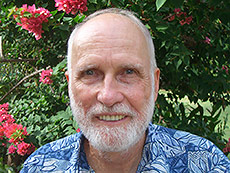
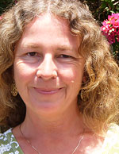
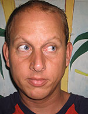
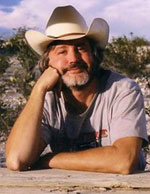

|
 |
 |
Puntos de
Inflexión Ecológica
- Cómo funcionan?
- Transformando círculos viciosos a círculos virtuosos
- Ingredientes para el éxito
- Elaboren sus propios Puntos de Inflexión Ecológica
Historias por Región
Historias por Tema
- Agricultura
- Agua y Cuencas
- Bosques
- Ecosistemas Urbanos
- Educación
- Energía
- Negocios
- Pesquerías
- Salud Pública
Videos Cortos
- Salvando un arrecife coral y una pesquería
(Filipinas) - Revitalizando vecindades urbanas con jardines comunitarios
(Nueva York) - Revirtiendo la deforestación tropical con bosques comunitarios
(Thailandia) - Rellenando aguas subterráneas con captación pluvial
(Rajastán, India) - Escapando la trampa de pesticidas
(India)
Explicando el Éxito
- Salvando un arrecife coral y una pesquería
(Filipinas) - Revitalizando vecindades urbanas con jardines comunitarios
(Nueva York) - Revirtiendo la deforestación tropical con bosques comunitarios
(Thailandia) - Rellenando aguas subterráneas con captación pluvial
(Rajastán, India) - Escapando la trampa de pesticidas
(India)

Ecología Humana: Presenta los principios de la ecología humana que sirven de fundamento a los Puntos de Inflexión Ecológica
Contáctenos
- ¿Tiene usted historias exitosas o materiales didácticos que desea compartirnos?
- ¿Le interesa colaborar en algún proyecto?
- ¿Necesita alguna ayuda con materias a cerca de los Puntos de Inflexión Ecológica para su evento o clase?
- ¿Tiene preguntas o desea hacer algún comentario sobre el Proyecto Puntos de Inflexión Ecológica?
- ¿Tiene preguntas o desea hacer algún comentario sobre nuestro sitio web?
- Nos encantaría que nos contacte.
- Escríbanos al: gmartenonline@gmail.com
Quienes Somos

Gerry Marten (Jefe del Proyecto Puntos de Inflexión Ecológica) es un ecologista con cincuenta años de experiencia de investigación en una variedad de ecosistemas alrededor del mundo. Ha vivido y trabajado en los Estados Unidos y Canadá, México y Centro América, África Oriental, el Sudeste Asiático y Japón. Su amor por la naturaleza durante su niñez en la Sierra de Santa Mónica al Sur de California, le inspiró una pasión científica por explorar el funcionamiento de la naturaleza, y un compromiso por explicar la ciencia de manera que la gente y las comunidades puedan aprovecharla. Autor de Ecología Humana: Conceptos Básicos para el Desarrollo Sustentable y de Agricultura Tradicional en el Sudeste Asíatico: Una Perspectiva de Ecología Humana, ha publicado aproximadamente cien artículos científicos, muchos de ellos sobre temas prácticos como son gestión de pesquerías y bosques, uso de suelos y agricultura tropical, energías alternativas, control ecológico de mosquitos, y como vivir sustentablemente en este planeta. Su mayor orgullo fue el desarrollo de un método biológico para controlar mosquitos que llevó a la erradicación del mosquito transmisor del dengue en gran parte de Vietnam. Reciente profesor de Ecología Humana en la Facultad de Ciencias Políticas de la Universidad Kwansei Gakuin en Japón, es ahora socio adjunto del East-West Center en Honolulu y profesor afiliado de varios departamentos de la Universidad de Hawai. Comenzó el proyecto Puntos de Inflexión Ecológica hace cuatro años para descubrir como las lecciones de historias ambientales exitosas pueden mostrar el camino hacia un mundo mejor para sus cinco nietos, y el resto de nosotros.
- Sitio web: gerrymarten.org
- Email: gmartenonline@gmail.com (please note to Gerry)

Regina Gregory es experta y autora sobre los temas de economía ambiental y gestión de recursos naturales. Sus publicaciones incluyen dictámenes del Banco Mundial, ESCAP, y Environmental Defense, así como artículos para Honolulu Weekly y Yes! Magazine.
- Email: gmartenonline@gmail.com (please note to Regina)

Bill Morrison, es el actual diseñador y webmaster de nuestro sitio web, y es un educador y activista comunitario cuyos intereses recientes son la propagación de plantas nativas y la gestión y restauración de suelos. Vive en Oahu con sus dos perros.
- Email: gmartenonline@gmail.com (please note to Bill)
Amanda Suutari es artista y periodista que trabaja principalmente los temas de sustentabilidad. Recientemente regresó a Canadá tras casi una década en Asia, desde donde contribuyó a numerosas publicaciones, incluidas Southeast Asian Review, Harvard Asia Quarterly, The Japan Times, Kyoto Journal, y Kansai Time Out. Sus más recientes intereses incluyen el campo emergente de diseño de sistemas completos, tanto en sus aplicaciones ecológicas como organizacionales. Actualmente basada en Vancouver, se está capacitando en coaching para ayudar a individuos y organizaciones a ser más efectivos.
- Email: gmartenonline@gmail.com (please note to Amanda)
David Nuñez es traductor independiente y maneja Mexiconservación, una organización ambiental que co-fundó.
- Email: gmartenonline@gmail.com (please note to David)

Steve Brooks es un reconocido periodista publicado en periódicos como el Dallas Morning News y el New Orleans Times-Picayune, y en revistas como Fortune y Business Week. ]Su propio punto de inflexión se dió en 1979, cuando su hogar en Pennsylvania casi fue borrado del mapa por el accidente nuclear en el reactor de Three Mile Island. Actualmente vive y trabaja en Austin, Texas.
- Email: gmartenonline@gmail.com (please note to Steve)
Nathalie Fabri, fue la diseñadora original de nuestro sitio web, y es una artista profesional cuyos trabajos han sido expuestos en todo Estados Unidos. Actualmente vive en California y es maestra de arte.
- Sitio web: fabrikations.com